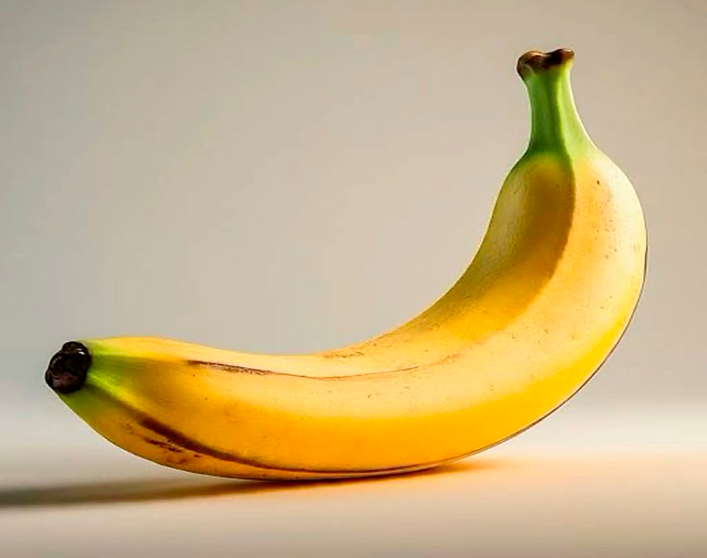

Receta saludable
Receta 3
Es un platanao, rico y lleno de potasio. Tepone a 100.
Ingredientes
- 1 Platano
- 1 Banana
- Ingrediente 3
- Ingrediente 4
- Ingrediente 5
Preparación
- Te subes al árbol
- Te bajas del árbol
- Te comes el platano
- Te comes la banana
- Te vas a dormir
Consejo práctico
Meterlo en el frigorífico para que esté más frío y se pueda comer mejor. También puedes añadirle un poco de miel para endulzarlo.